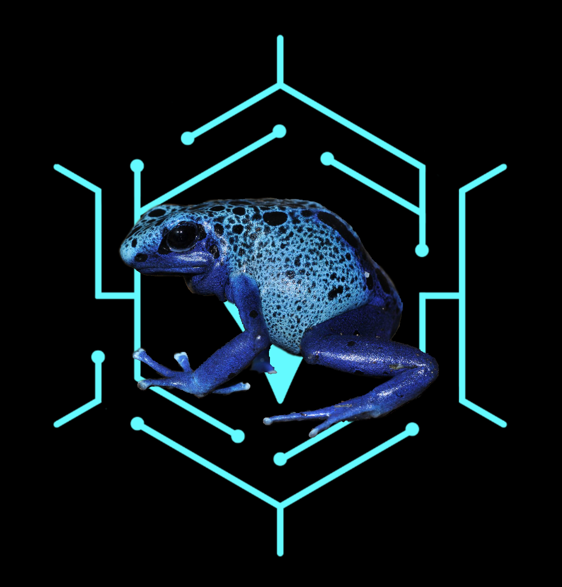
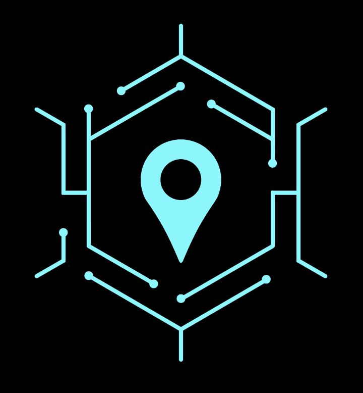
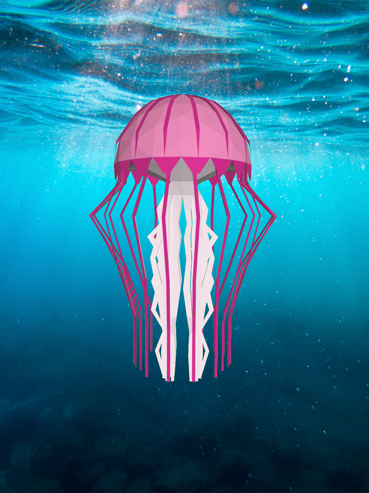

<!doctype html>
<html>

    <head>
        <meta name="viewport" content="width=device-width, initial-scale=1.0, user-scalable=no">
        <meta name="apple-mobile-web-app-capable" content="yes">

        <title>8th Wall Web: Flyer</title>

        <script src="//cdn.8thwall.com/web/aframe/8frame-0.9.0.min.js"></script>

        <!-- XR Extras - provides utilities like load screen, almost there, and error handling.
         See github.com/8thwall/web/xrextras -->
        <script src="js/xrextras.js"></script>

        <!-- 8thWall Web - Replace the app key here with your own app key -->
        <script defer src="https://apps.8thwall.com/xrweb?appKey=gDG18m9XhFZhXxflr5W3Lc85v7SUPhZ2GHdLiZn1o82l8Xc6ELbcscUD9vZTVcMfj38j8F"></script>

        <!-- client code -->
        <script src="js/aframe-imageTarget.js"></script>
        <script src="js/ws.js"></script>
    </head>

    <body onload="loadExperiences()">

        <a-scene id="scene" xrweb xrextras-gesture-detector xrextras-almost-there xrextras-loading xrextras-runtime-error>

            <a-assets id="aframeAssets">
                <!-- Credit to Poly by Google for the model: https://poly.google.com/view/dA5osnS0Rzj
                <a-asset-item id="jelly-glb" src="assets/jellyfish-model.glb"></a-asset-item> -->
                <!-- 
                
                

                <a-asset-item id="jellymodel" src="assets/jellyfish-model.glb"></a-asset-item>

                <video id="whistle" autoplay crossorigin="anonymous" loop="true" src="video/whistle.mp4"></video>
                <video id="signs" autoplay crossorigin="anonymous" loop="true" src="video/signs.mp4"></video>
                <video id="jellyfish" autoplay crossorigin="anonymous" loop="true" src="video/jellyfish-video.mp4"></video> -->
            </a-assets>

            <a-camera position="0 4 10" raycaster="objects: .cantap" cursor="fuse: false; rayOrigin: mouse;"></a-camera>
            <a-light type="directional" intensity="0.5" position="1 1 1"></a-light>
            <a-light type="ambient" intensity="1"></a-light>

            <!-- <a-entity id="jellymodel" position="0 0 0" scale=".95 .95 1" gltf-model="#jellymodel"></a-entity> -->


            <!-- Populate with paths -->
            <!-- <a-entity xrextras-named-image-target="name: path" xrextras-play-video="video: #signs; thumb: #path; canstop: true" geometry="primitive: plane; height: 1; width: 0.79;"></a-entity>
            <a-entity id="testing" image-target="name: pathfrog" xrextras-play-video="video: #whistle; thumb: #pathfrog; canstop: true" geometry="primitive: plane; height:3; width:3"></a-entity>
            <a-entity xrextras-named-image-target="name: jellyfish" xrextras-play-video="video: #jellyfish; thumb: #jelly; canstop: true" geometry="primitive: plane; height:1; width: 0.79;"></a-entity> -->

        </a-scene>

    </body>

</html>